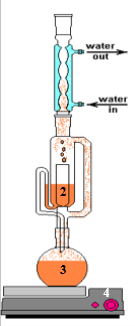

3. DISEÑO DEL EXPERIMENTO PARA COMPROBAR LAS HIPÓTESIS
Metodología para la extractos de extractos vegetales
Para realizar la práctica necesitas los siguientes elementos:
Roles en el equipo
· Líder de seguridad: verifica equipo de protección y calentamiento.
· Técnico de montaje: arma el Soxhlet y conecta las mangueras.
· Analista de datos: pesa, registra y calcula.
· Cronometrista/observador: controla tiempos y número de sifoneadas.
· Apoyo: prepara la muestra y colabora en limpieza.
Materiales y reactivos
Equipo
· Extractor Soxhlet completo con refrigerante.
· Matraz fondo redondo de 250 mL.
· Manta o canastilla de calentamiento.
· Soporte universal y pinzas.
· Termómetro.
· Vasos de precipitados de 250 mL.
· Probeta de 100 mL.
· Balanza digital.
· Papel filtro o cartucho.
· Mortero para triturar muestra.
· Placas o cápsulas para evaporar solvente.

Reactivos
· Etanol 96% (200 mL).
· Agua destilada (para limpieza o preparar mezcla agua–etanol).
Seguridad personal
· Bata, guantes, lentes de seguridad y cabello recogido.
Preparación de la muestra
· Secar previamente las hojas de romero (o planta elegida) a temperatura ambiente ventilada o en estufa a 40–45 °C.
· Triturar suavemente en mortero hasta obtener partículas de 1–3 mm.
· Pesar 100 g de muestra seca y anotarlo como masa inicial.
· Preparar un cartucho de papel filtro con la muestra.
· Pre-pesar la cápsula donde quedará el extracto y registrar la tara.
Montaje del sistema
· Colocar el cartucho con la planta en el tubo Soxhlet.
· Verter 200 mL de etanol en el matraz.
· Ensamblar el Soxhlet con el refrigerante y conectar las mangueras (entrada de agua por abajo, salida por arriba).
· Encender el flujo de agua antes de iniciar el calentamiento.
Extracción
· Calentar suavemente con la manta hasta alcanzar 60–65 °C.
· Observar el ciclo de llenado y sifoneo del Soxhlet.
· Mantener la extracción durante 30 a 45 minutos, asegurando al menos 3 sifoneadas.
· Apagar la calefacción, dejar enfriar 10 minutos y desmontar con precaución.
Recuperación del extracto
· Verter la solución extractiva a un vaso limpio.
· Evaporar parte del alcohol en baño María a no más de 50 °C hasta obtener un residuo aceitoso o sólido.
· Pasar el extracto a la cápsula pre-pesada, dejar enfriar y pesar nuevamente.
· Calcular la masa del extracto restando la tara.